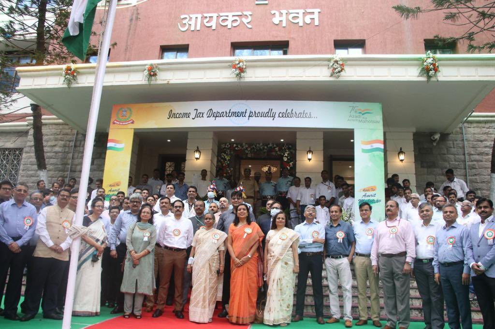

Income Tax Department, Mumbai(Aayakar Bhawan)
Introduction
The Income Tax Department in Mumbai is the highest revenue-contributing region in India. It manages the taxation process for the financial capital of the country. Ensuring timely tax compliance is a fundamental duty of every citizen.
Key Office Locations
- Aayakar Bhavan: Marine Lines, Mumbai.
- Scindia House: Ballard Estate, Mumbai.
- Bandra-Kurla Complex (BKC): National Stock Exchange Building.
Important Services
- PAN Card Services: Applying for new PAN or changes in existing data.
- ITR Filing: Submission of Income Tax Returns before the deadline.
- Tax Refunds: Tracking and processing of excess tax paid.